The Import menu in the Galaxy tab. Select Import > Objects > From CSV to begin the CSV import process. This is how you bring modified or new object instances back into the Galaxy (page 8-34)
Source: AVEVA Application Server 2023 Training Manual, Module 8 Section 2 + Lab 15
Covers exporting object instances to CSV, editing in Excel, importing modified CSVs, and creating new instances via CSV. Includes full Lab 15 walkthrough. (pages 8-31 to 8-55)
Reference: Module 8 Section 2 (pages 8-31 to 8-37)
AVEVA Application Server provides Export Selected as CSV and Import Objects from CSV features that allow you to bulk-export object instances and their configuration data to comma-delimited files, edit them in external tools like Microsoft Excel or Notepad, and re-import the modified files back into the Galaxy.
.csv fileThe CSV file contains the configuration for the checked-in versions of selected objects plus any checked-out objects belonging to the user who initiates the export. Only attributes that are unlocked and configuration-time writable are included — one column per attribute. The following are not exported:
| Not Exported | Reason |
|---|---|
| Script libraries | Libraries are global, not per-instance |
| Scripts within objects | Scripts within an object are exported, but library references are not |
| Non-text attributes | e.g. QualifiedStruct types |
| Locked attributes | Inherited from template; not instance-specific |
| Runtime-writable attributes only | These are not configuration-time values |
| Custom object online help files | Not part of CSV export scope |
Exported objects are organized by template in the resulting CSV file. Each template section begins with a :TEMPLATE=$[TemplateName] header line, followed by a row of column headers (attribute names), then one data row per instance. Comments can be added by prefixing a line with a semicolon (;).
\n in the CSV. Do not delete these \n characters. To insert a carriage return in a script within the CSV, use \n. To include a literal backslash followed by "n" in a script (not interpreted as carriage return), use \\n.
A CSV file can be edited in most text editors and spreadsheet programs. Using editing functions like copy and paste, you can create quantities of already-configured objects ready to be imported into your Galaxy.

.csv file, select it, and click Open to begin the import (page 8-35)When importing objects that already exist in the Galaxy, the Galaxy load conflict resolution dialog appears, offering four options:
| Option | Behavior |
|---|---|
| Replace entire instance | Completely overwrites the existing object with the imported version |
| Only update changed attributes | Only overwrites attributes where the imported value differs from the current value |
| Skip | Keeps the existing Galaxy object; ignores the imported version entirely |
| Stop Galaxy load | Cancels the entire import process when any conflict is found |

Reference: Lab 15 (pages 8-37 to 8-55)
Prerequisites: You should have completed earlier labs with Mixer100 and its contained objects (Agitator_001, Inlet1_001, Inlet2_001, Level_001, Outlet_001, Pump1_001, Pump2_001, Temperature_001) deployed under Line1.
Reference: Lab 15 Steps 1–5 (pages 8-38 to 8-39)
Step 1. In the IDE, Model view, select Mixer100 and all of its contained objects.
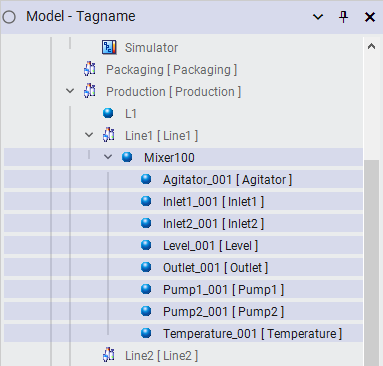
Simulator > Production > L1 > Line1. All contained objects are visible: Agitator_001, Inlet1_001, Inlet2_001, Level_001, Outlet_001, Pump1_001, Pump2_001, and Temperature_001 (page 8-38)Step 2. Right-click any of the highlighted objects and select Export > Selected as CSV.
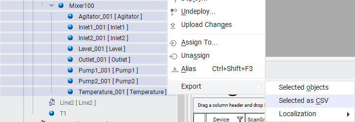
Step 3. The Export Selected objects as CSV dialog appears. Navigate to C:\Training, and in the File name field, enter Mixer.
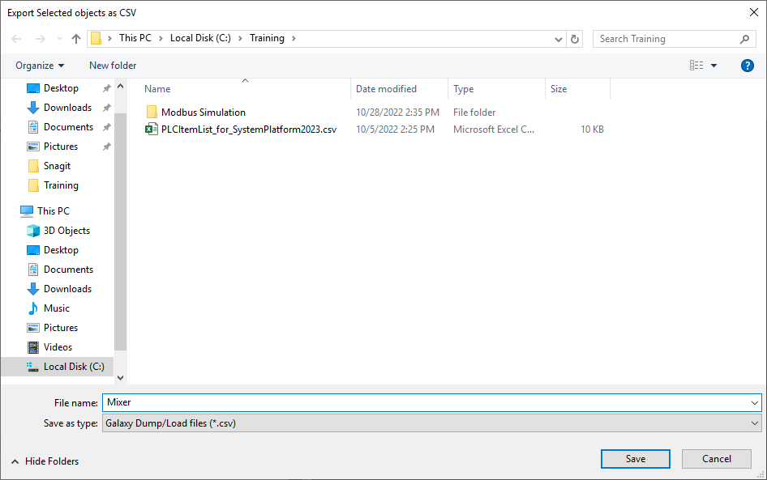
C:\Training and enter Mixer as the file name. The Save as type is set to Galaxy Dump/Load files (*.csv) (page 8-39)Step 4. Click Save. When the export is complete, the progress displays "Dump completed."
Step 5. Click Close.
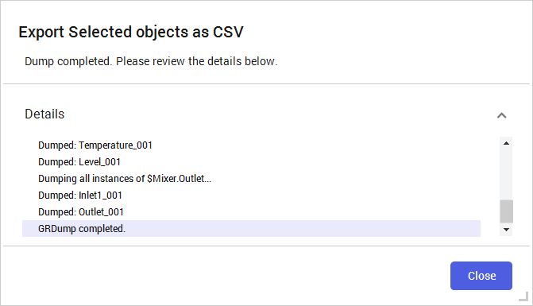
Reference: Lab 15 Steps 6–16 (pages 8-40 to 8-43)
Step 6. Open Microsoft Excel.
Step 7. In Excel, click Open and browse to C:\Training.
Step 8. Using the file type drop-down list, select All Files (*.*), and then select the Mixer.csv file.
Step 9. Click Open.
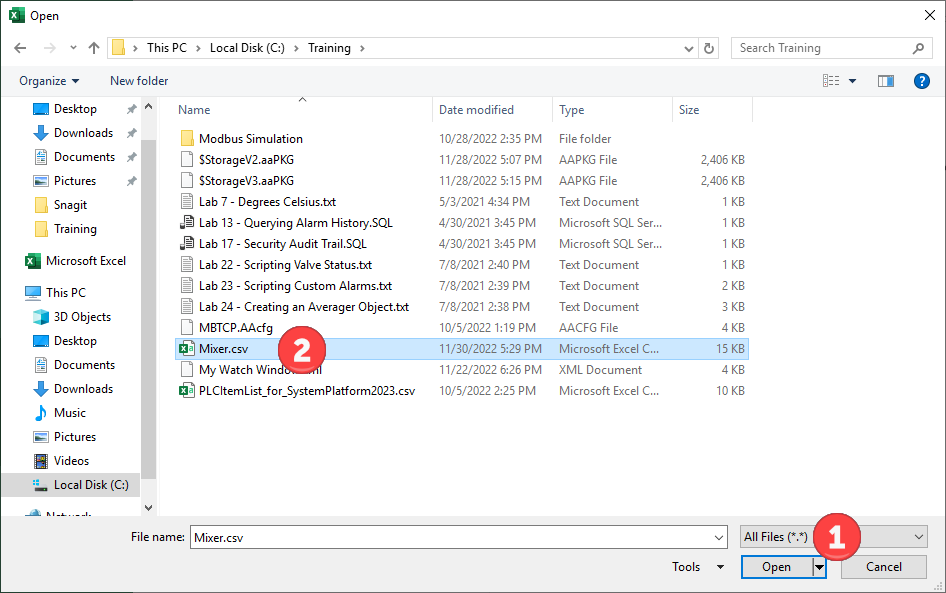
Mixer.csv (red circle ②) from the C:\Training folder (page 8-40)Step 10. The Text Import Wizard - Step 1 of 3 appears. Select the Delimited option if necessary.
Step 11. Leave all other default options and click Next.
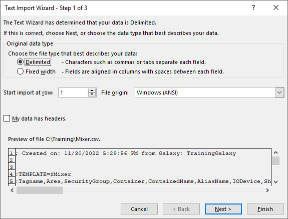
Step 12. In the Delimiters area, uncheck the Tab check box, and then check the Comma check box.
Step 13. Click Finish.
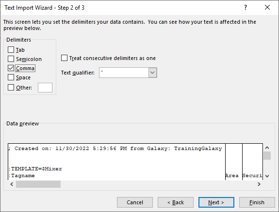
Step 14. Expand Column A to fully display the cell contents.
Step 15. For the Mixer100 instance, ShortDesc attribute (cell H6), enter Mixing Tank.
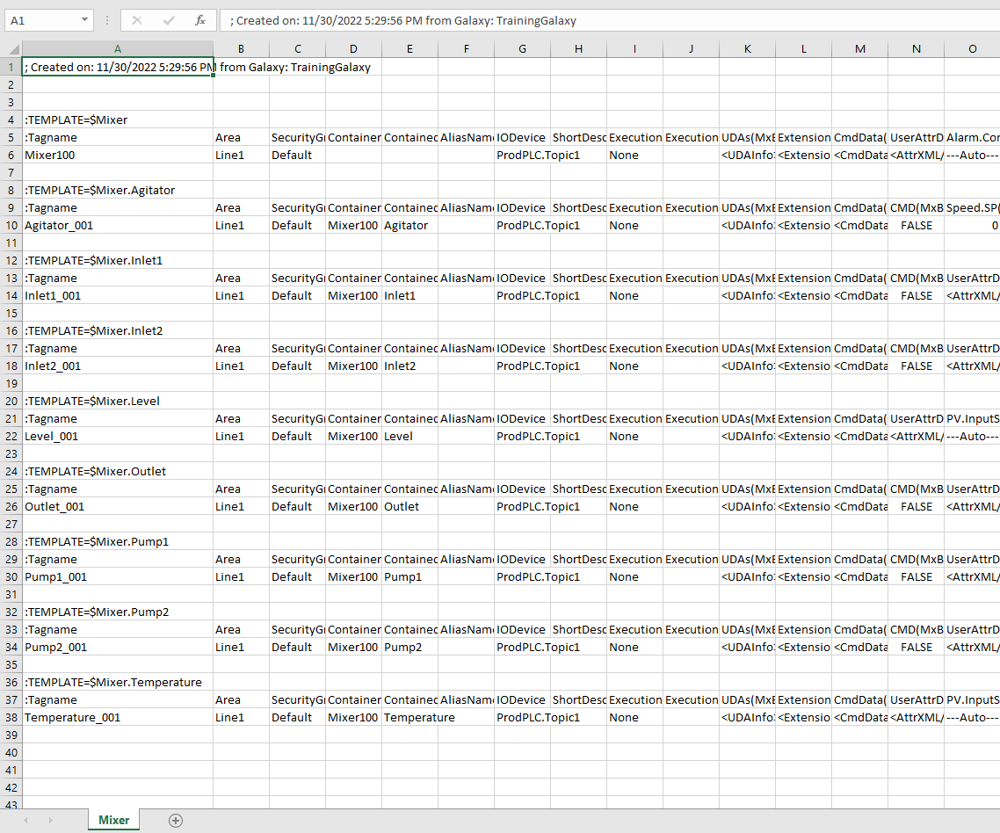
:TEMPLATE=$Mixer section and child templates ($Mixer.Agitator, $Mixer.Inlet1, etc.) are visible. Columns B–O contain attribute values like Area, SecurityGroup, Container, IODevice, and ShortDesc (page 8-42)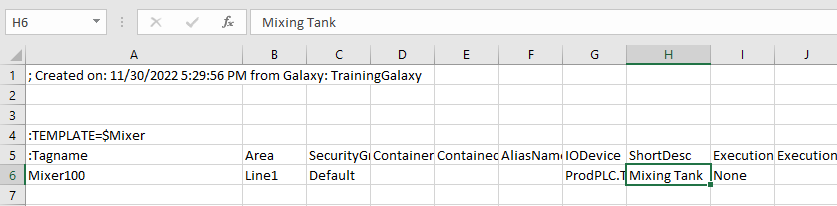
Mixing Tank for the Mixer100 instance. The formula bar confirms the active cell content (page 8-42)Step 16. Change the remaining ShortDesc values as follows:
| Instance | ShortDesc | Cell |
|---|---|---|
| Agitator_001 | Agitator Motor | H10 |
| Inlet1_001 | Inlet Valve 1 | H14 |
| Inlet2_001 | Inlet Valve 2 | H18 |
| Level_001 | Tank Level | H22 |
| Outlet_001 | Outlet Valve | H26 |
| Pump1_001 | Inlet Pump 1 | H30 |
| Pump2_001 | Inlet Pump 2 | H34 |
| Temperature_001 | Tank Temperature | H38 |
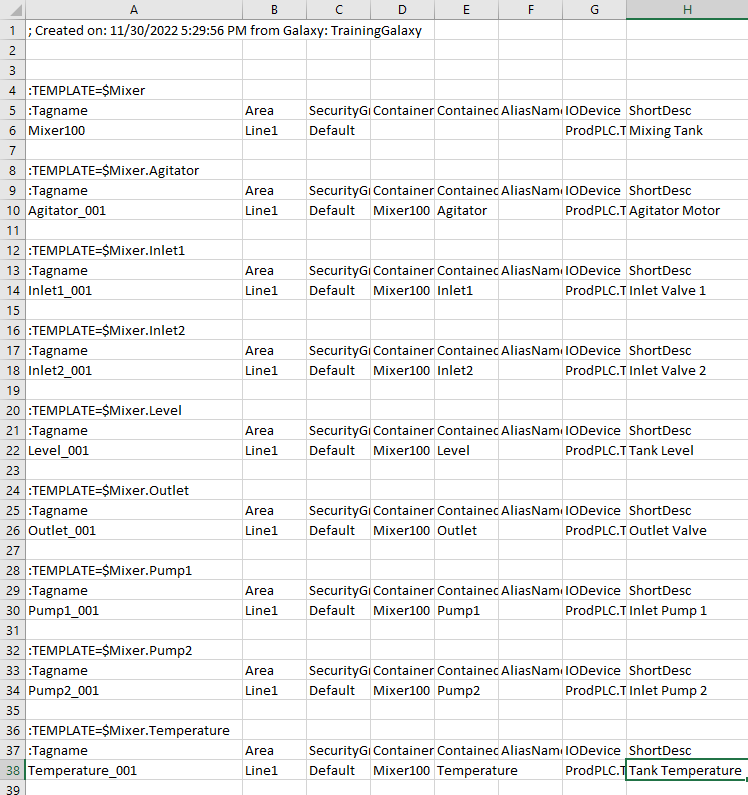
Reference: Lab 15 Steps 17–29 (pages 8-44 to 8-46)
Step 17. On the File menu, click Save As, and navigate to C:\Training.
Step 18. In the File name field, enter Mixer1.
Step 19. In the Save as type drop-down list, select CSV UTF-8 (Comma delimited).
Step 20. Click Save. A yellow information bar appears with a warning of POSSIBLE DATA LOSS.
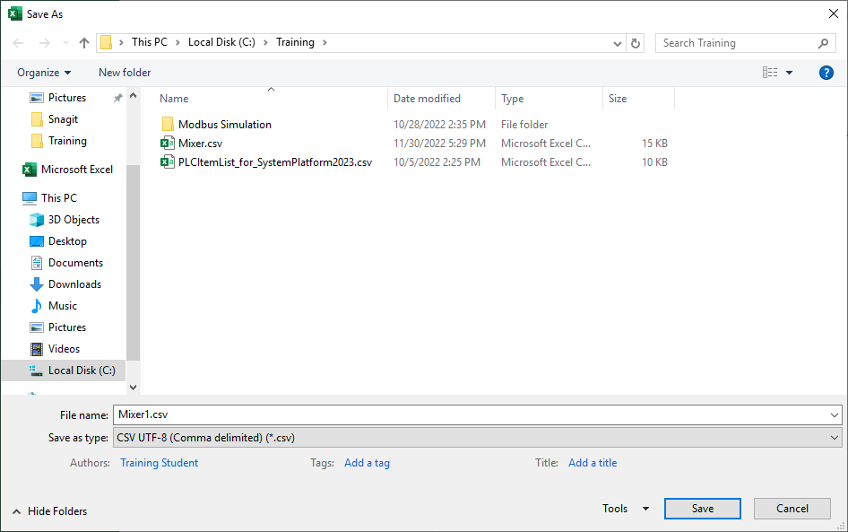
Mixer1 as the file name (red circle) and select CSV UTF-8 (Comma delimited) as the file type (red circle). The save location is C:\Training (page 8-44)Step 21. Click Don't show again to retain the .csv format.
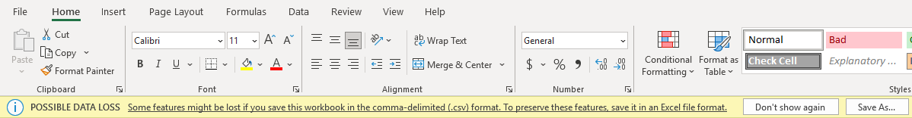
Step 22. Close Microsoft Excel.
Step 23. In the IDE, click the Galaxy menu, and then select Import.
Step 24. In the Objects drop-down list, select From CSV.
Step 25. In the Import Objects from CSV dialog box, select the Mixer1.csv file.
Step 26. Click Open.
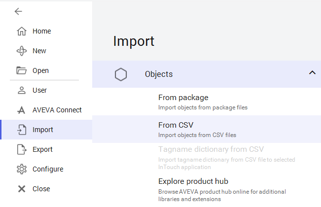
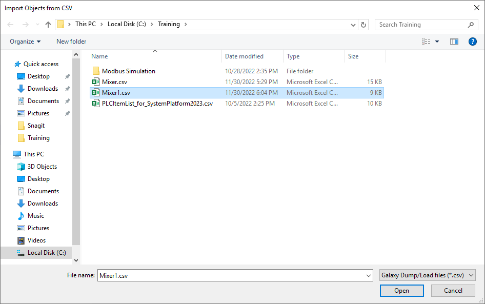
Mixer1.csv (15 KB) from the C:\Training folder and click Open to begin the import (page 8-45)Step 27. The Galaxy load conflict resolution dialog appears. Select Only update changed attributes.
Step 28. Click Import. When the import is complete, the progress displays "Load completed."
Step 29. Click Close.
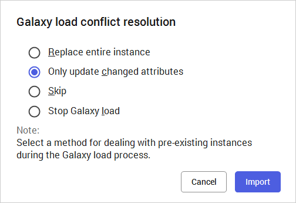
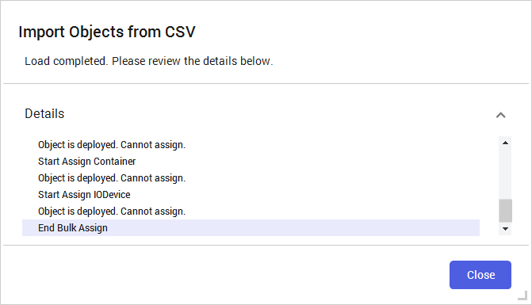
Reference: Lab 15 Steps 30–32 (page 8-47)
Step 30. In the IDE, verify the Model view now displays that the imported objects have pending changes that need to be redeployed.
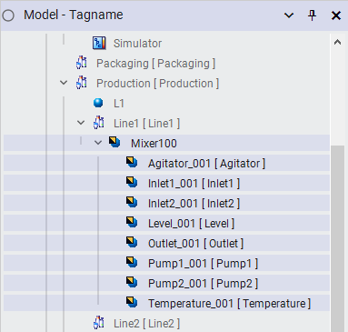
Step 31. For each object, open the configuration editor, click the Object Information tab, and verify the Description fields match those entered in Excel:
| Object | Description |
|---|---|
| Mixer100 | Mixing Tank |
| Agitator_001 | Agitator Motor |
| Inlet1_001 | Inlet Valve 1 |
| Inlet2_001 | Inlet Valve 2 |
| Level_001 | Tank Level |
| Outlet_001 | Outlet Valve |
| Pump1_001 | Inlet Pump 1 |
| Pump2_001 | Inlet Pump 2 |
| Temperature_001 | Tank Temperature |
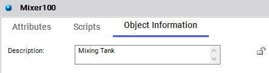
Mixing Tank — confirming the ShortDesc value from the CSV was successfully imported (page 8-47)Step 32. Close all open configuration editors.
Reference: Lab 15 Steps 33–68 (pages 8-48 to 8-55)
Step 33. In the Deployment view, deploy Mixer100, and verify the Cascade Deploy option is checked.
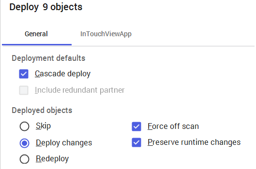
Step 34. Leave all other default options, and click Deploy.
Step 35. When the Deploying Objects progress displays "Deploy complete," click Close.
Next, you will create another mixer container instance named Mixer200 by modifying and importing a CSV file. The key technique is to open the CSV, use Find and Replace to rename all objects, save as a new file, and import it.
Step 36. Open Microsoft Excel, and then click Open.
Step 37. Click Mixer1.csv from the recent files list.
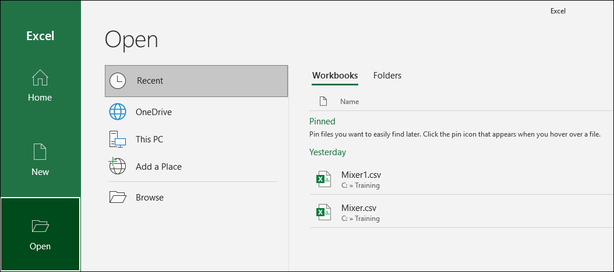
Mixer1.csv from the Yesterday recent files list (red circle) to reopen the modified CSV file (page 8-48)Steps 38–41. Use the Text Import Wizard (Delimited, Comma) to open the CSV, same as before.
Step 42. Expand Column A to see all contents.
Step 43. Use Find and Replace to rename Mixer100 to Mixer200.
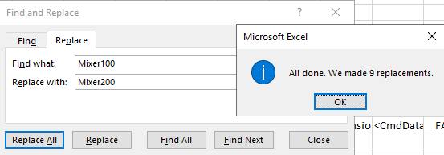
Mixer100 with Mixer200. The confirmation shows "All done. We made 9 replacements." — this renames the mixer and all container references (page 8-49)Step 44. Rename the objects ending in _001 to end in _002.
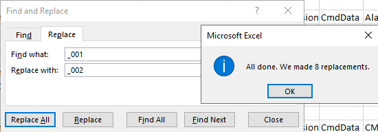
_001 with _002. The confirmation shows "All done. We made 8 replacements." — this renames all contained object tag suffixes (page 8-49)Step 45. Rename everything named Line1 to Line2.
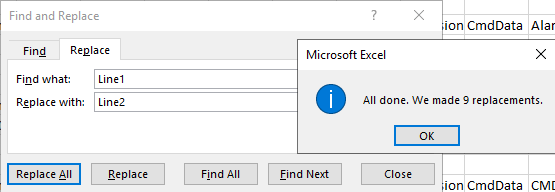
Line1 with Line2. The confirmation shows "All done. We made 9 replacements." — this moves all objects to the Line2 area (page 8-49)Step 46. Click Close on the Find and Replace dialog.
Step 47. Verify the following:
_002 extensionLine2Mixer200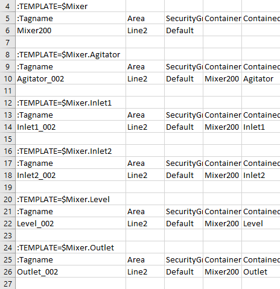
_002 suffix, the Area column shows Line2, and the Container column shows Mixer200. The red highlight shows the renamed child objects (page 8-50)Step 48. On the File menu, click Save As, navigate to C:\Training.
Step 49. In the File name field, enter Mixer2.
Step 50. Verify CSV UTF-8 (Comma delimited) is selected.
Step 51. Click Save.
Step 52. Close Microsoft Excel.
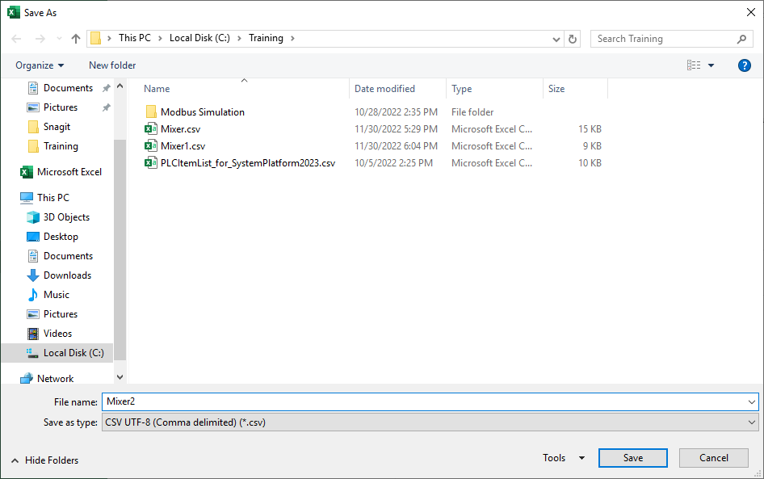
Mixer2 as the file name (red circle) with CSV UTF-8 (Comma delimited) selected (red circle). This creates Mixer2.csv in C:\Training (page 8-51)Step 53. In the IDE, click the Galaxy menu, and select Import > Objects > From CSV.
Step 54. In the Import Objects from CSV dialog box, select Mixer2.csv.
Step 55. Click Open. The Galaxy load conflict resolution dialog box appears.
Step 56. Leave the default options (Skip) and click Import.
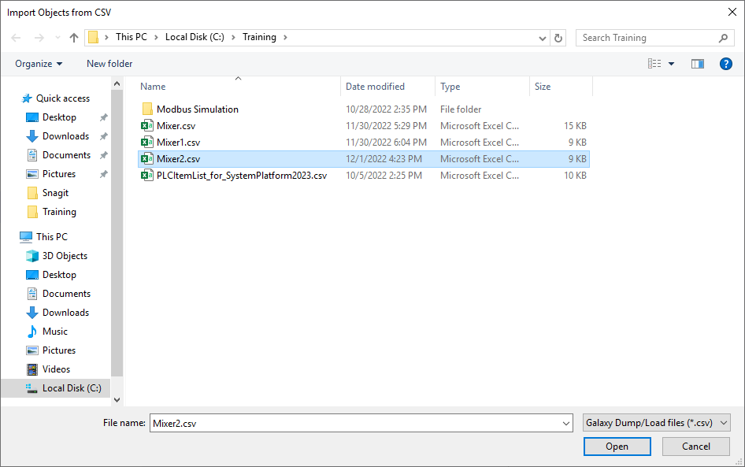
Mixer2.csv (9 KB) from C:\Training and click Open to import the new Mixer200 instances (page 8-52)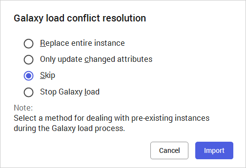
Step 57. Click Close on the import completion dialog.
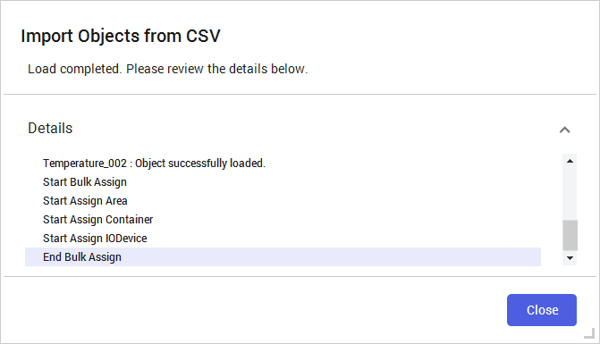
Step 58. In the IDE, Model view, expand Line2 and verify that the new Mixer200 instance has been added to the Line2 area.
Step 59. Expand Mixer200 to view the new contained objects.
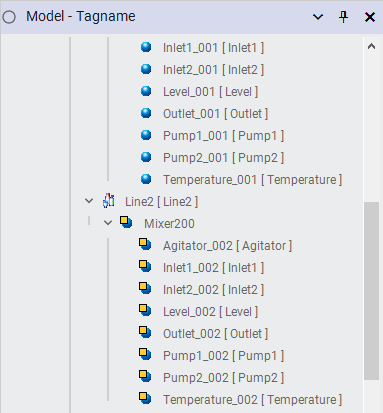
Reference: Lab 15 Steps 60–68 (pages 8-54 to 8-55)
Step 60. Deploy Mixer200 and all its contained objects.
Step 61. In the Deploy dialog box, leave the default options and click Deploy. When complete, click Close.
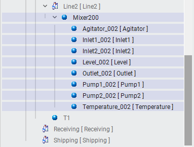
Step 62. View Mixer200 in Object Viewer.
Step 63–64. In Object Viewer, create a watch window called Mixer200, and add the following attributes:
Level_002.PV, Inlet2_002.CMD, Temperature_002.PV, Inlet2_002.LSOpen, Agitator_002.PV, Outlet_002.CMD, Agitator_002.PV.Msg, Outlet_002.LSOpen, Agitator_002.Speed.PV, Pump1_002.CMD, Agitator_002.Speed.SP, Pump1_002.PV, Inlet1_002.CMD, Pump2_002.CMD, Inlet1_002.LSOpen, Pump2_002.PV
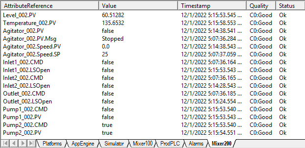
Level_002.PV = 60.51, Temperature_002.PV = 135.65, Agitator_002.Speed.SP = 25. All Quality values show CO:Good and Status shows Ok, confirming healthy communication with the simulated process (page 8-54)Step 65. Select the Alarms watch window.
Step 66. Add Mixer200.AlarmCntsBySeverity to the Alarms watch window, and when prompted, enter -1 to add all items in the array.
Step 67. Add Level_002.AlarmCntsBySeverity to the Alarms watch window, and when prompted, enter -1 to add all items in the array.
Step 68. Save the watch list and minimize Object Viewer.
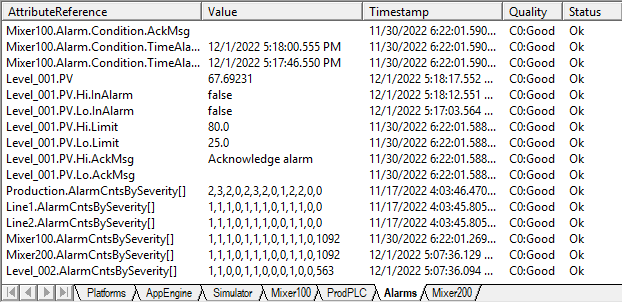
Mixer200.AlarmCntsBySeverity[] shows alarm counts by severity level (red oval), and Level_002.AlarmCntsBySeverity[] shows level-specific alarm counts (red oval). Also visible are Mixer100 alarm attributes, Level_001 PV and alarm limits, and Production/Line1/Line2 alarm counts. All Quality values are CO:Good (page 8-55)Export: IDE → Select instances → Right-click → Export → Selected as CSV → Save file
Edit: Open CSV in Excel → Modify values → Save As (new name) → Close Excel
Import: IDE → Galaxy → Import → Objects → From CSV → Select file → Conflict resolution → Import; Created on: date from Galaxy: name
:TEMPLATE=$Template
Tagname, Area, SecurityGroup, Container, ...
InstanceName, Line1, Default, ParentName, ...
:TEMPLATE=$Template.Child
Tagname, Area, SecurityGroup, Container, ...
ChildName, Line1, ParentName, ParentName, ...No. The Export Selected as CSV function only exports object instances. Templates cannot be exported or imported via CSV.
Attributes that are locked or runtime-writable only are not saved to the CSV file. Only unlocked, configuration-time writable attributes are exported.
All objects that were changed or created during the Import from CSV process are automatically checked in.
The templates from which the instances were derived must already exist in the Galaxy. The CSV only contains instances, not templates.
Open the exported CSV in Excel, use Find and Replace to rename the tag name (Mixer100 → Mixer200), contained object suffixes (_001 → _002), and area names (Line1 → Line2). Save as a new CSV file and import it. The new instances are created automatically.
It only overwrites attributes where the imported value differs from the current value in the Galaxy, leaving all unchanged attributes untouched. This is the most common choice for targeted configuration updates.
Carriage returns in scripts are saved as \n in the CSV file. To write a literal backslash-n (not interpreted as a carriage return), use \\n.
Source: AVEVA Application Server 2023 Training Manual, Module 8 Section 2 + Lab 15